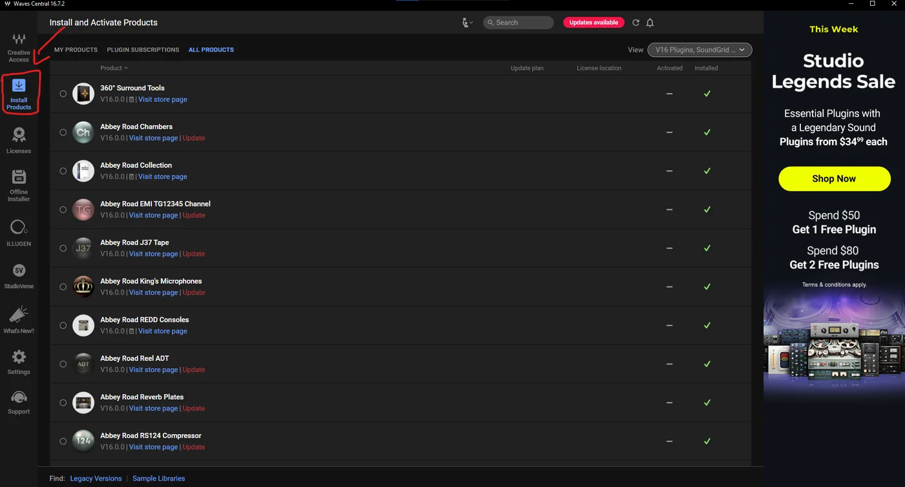
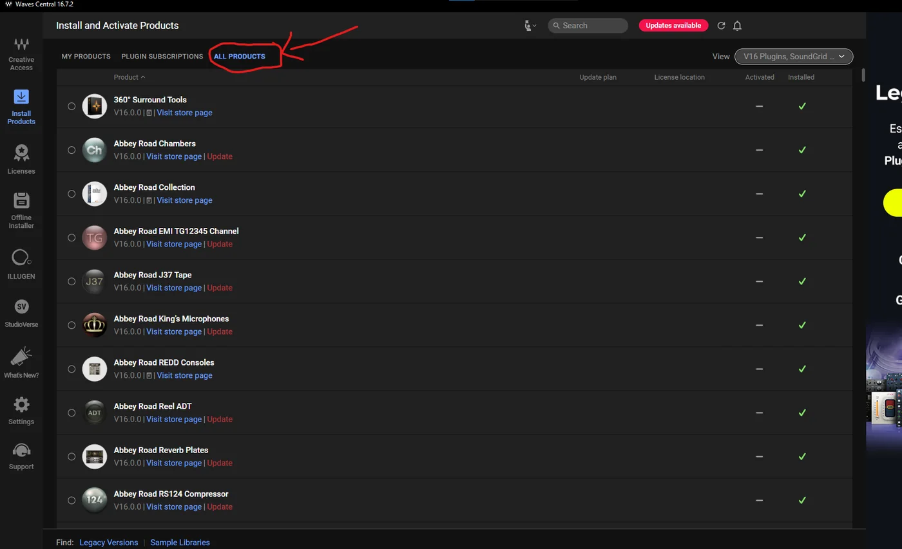
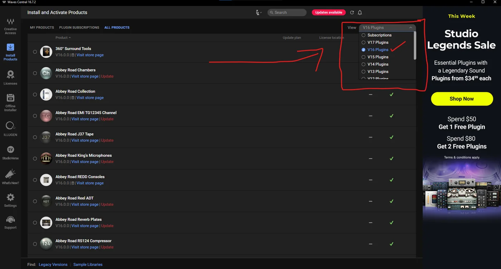
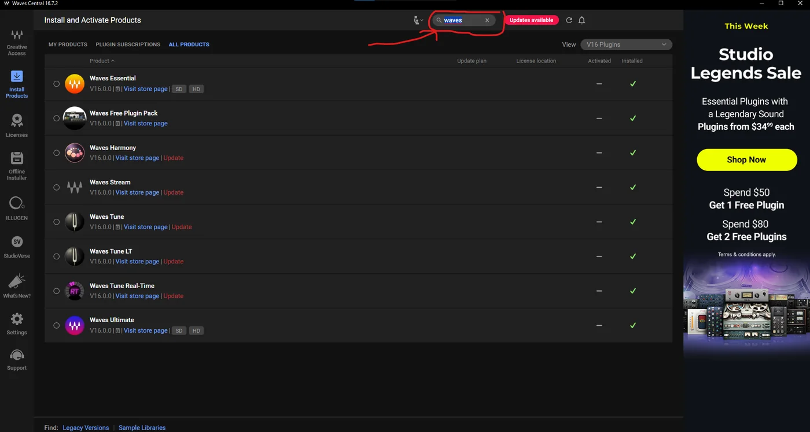
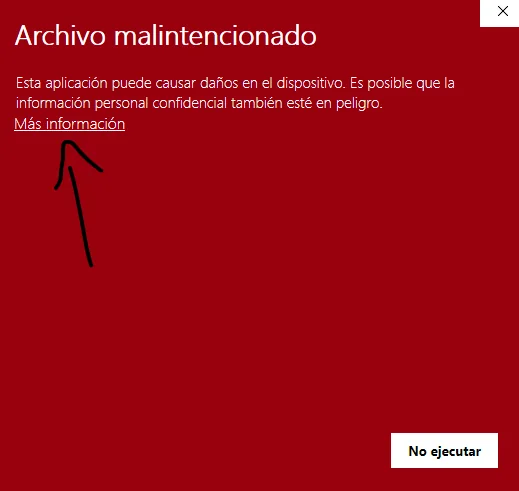
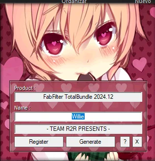
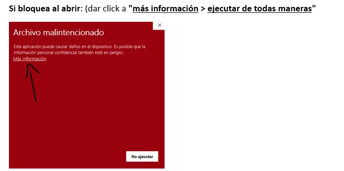
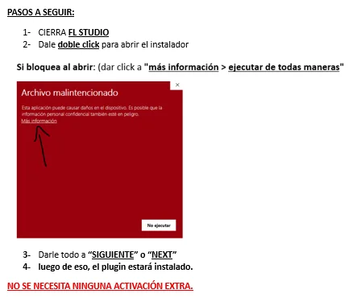
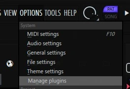
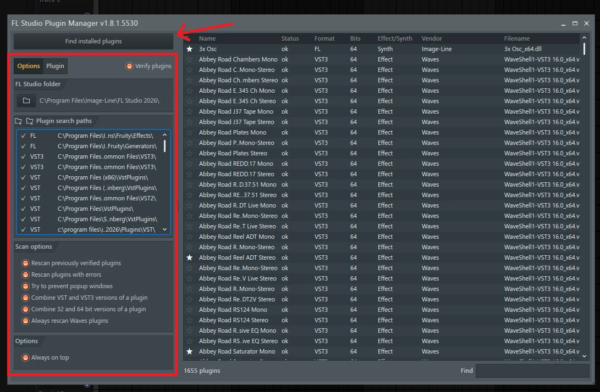

🎛️
Cómo instalar tus plugins
Instala en este orden y con FL Studio cerrado. Cada sección tiene sus pasos y, dentro, los botones de descarga.
1FL Studio 26
Instalación
- Instalar el archivo descargado de Fl studio v26 es un archivo .exe ejecutable para windows
- Ya estará activado listo para usar (NO se necesita activaciones, ya viene activado el instalador)
🍎
PARA MAC: (SEGUIR MISMOS PASOS, PRIMERO DESCOMPRIMIR EL .RAR CON WIN RAR)
2Waves · versión V16
Cuenta y descarga
- Crearte una cuenta en waves.com
- Descargar Waves Central
Instalar los plugins
- Cerrar FL Studio
- Abrir Waves Central
- Iniciar session o Crear tu cuenta del Waves Central
- Ir a “Install Products”

- Clickear en All Products

- En View seleccionar solo V16 Version (¡y nada más!)

- Seleccionar todos los plugins que necesitas en V16, si no sale algun plugin tener en consideración lo siguiente:
- Deeser = puedes buscarlo como “dee” o “de”
- Wavestune = puedes buscarlo como “waves”
- SSL EQ = puedes buscarlo como “SSL” e instalas todos los que salen.
- CLA-2A y CLA Vocals = puedes buscarlos como “CLA”
- Manny Marroquin Triple D = puedes buscarlo como “Triple D” o “Manny”
Plugins de Waves que necesitas:
- WavesTune
- NS1
- Manny Marroquin Triple D (MannyM TripleD)
- API-560
- DeEsser
- CLA-2A
- SSL EQ
- CLA Vocals
- C6 Multiband Compressor
- H-Delay
- L4 Ultramaximizer

- Click en “Install” se encontrará en la parte derecha
- Despues de que termine de instalar todo, cerrar el waves central, NO ABRIR EL FL STUDIO O TU DAW AÚN
Activar
- Descargar este archivo para poder activar los plugins
- Darle doble click al archivo que descargaste de mediafire que se llama: Waves_Ultimate_2025.3_patch.exe
- Reiniciar la PC
- Abrir el Fl studio o tu daw, escanea completamente los plugins con todas las opciones.
- Ya estarán instalados y activados!
3FabFilter
Instalar
- CIERRA FL STUDIO
- INSTALAR PLUGINS QUE NECESITAS:
Activar
- USAR ESTE ACTIVADOR PARA TODOS LOS PLUGINS DE FAB FILTER:
⚠️Si bloquea al abrir: (dar click a "más información > ejecutar de todas maneras"

- DARLE A “REGISTER" luego a "GENERATE" > luego puedes cerrar esa ventana.

💡
Si instalas uno nuevo, repetir proceso de “register y generate”
4Ozone 12
Instalación
- CIERRA FL STUDIO
- Descargar el instalador
- Dale doble click para abrir el instalador
⚠️Si bloquea al abrir: (dar click a "más información > ejecutar de todas maneras"

- Darle todo a “SIGUIENTE” o “NEXT”
- luego de eso, el plugin estará instalado.
✅
NO SE NECESITA NINGUNA ACTIVACIÓN EXTRA.
5Valhalla completo
Descarga y pasos

6Escanear plugins en FL Studio · paso final
Pasos
- Ir a Options > Manage plugins

Manage plugins" loading="lazy"> - Saldrá esta ventana: activa todas las opciones (las del recuadro rojo) y dale a Find installed plugins

✅
Cuando termine el escaneo, tus plugins ya aparecen listos en FL Studio.
🎁 REGALITO PARA TI
10% de descuento en tu próxima compra usando este código: